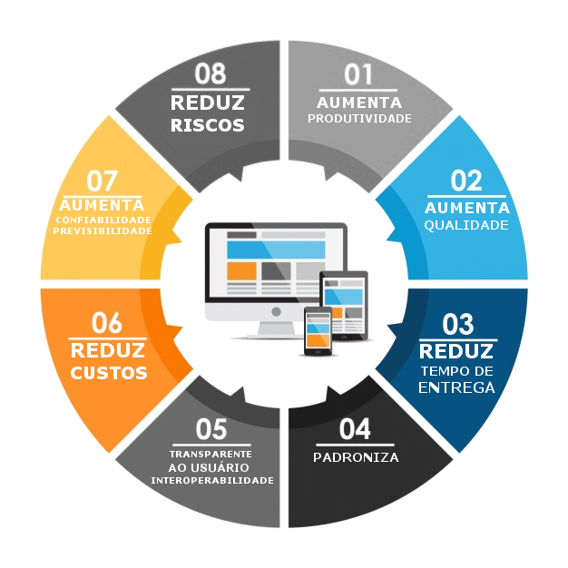

Gestão de Ativos Reutilizáveis
A reutilização de ativos de software e de processos visa à sistematização e difusão de práticas de reutilização na organização. Isso pode ser concretizado através da definição de procedimentos para utilização de ativos reutilizáveis em uma organização. Esses ativos são armazenados e controlados em duas bibliotecas de ativos distintas, sendo uma para ativos de software e a outra para ativos de processo, as quais permitem também a recuperação desses ativos.
Objetivo
Definir procedimentos para utilização de ativos reutilizáveis de software e de processo em uma organização, estabelecendo e controlando essas bibliotecas para o armazenamento e recuperação desses ativos.
Gerar informações sobre a utilização que subsidiem ações a serem tomadas pelos gestores de ativos reutilizáveis no sentido de sua melhoria, continuidade ou descontinuidade.
GAR
O Gerenciador de Ativos Reutilizáveis (GAR) visa à utilização de artefatos reutilizáveis, estabelecendo e controlando um ambiente para o armazenamento, recuperação e divulgação desses artefatos.
Visa definir procedimentos, tanto administrativos quanto técnicos, para a utilização de artefatos reutilizáveis, estabelecendo e controlando um ambiente para o armazenamento, recuperação e divulgação desses artefatos, propiciando os resultados esperados pelo processo GRU (Gerência de Reutilização).
Tipos de Ativos Reutilizáveis
- De Processo: documentos que contém processos, modelos ou procedimentos que podem ser reutilizados por diferentes projetos ou processos da empresa.
- De software: pode ser um sistema completo ou componente desenvolvido pela PD CASE, além de componentes externos de código proprietário ou aberto utilizado por algum projeto da PDCase. um serviço pré-agendado para horários a definir, irá recuperar o arquivo disponibilizado e se encarregará de realizar o envio. Após confirmação de recebimento pelo BACEN um XML de resposta estará disponível.
Candidato x Disponível
- Ativo Candidato: aderente à definição de artigo reutilizável citada na definição de ativo candidato deste documento e é cadastrado nas bibliotecas de ativos disponíveis (ativos de processo ou de software)como ativo candidato.
- Ativo Disponível: são os ativos já certificados e disponíveis na biblioteca de ativos e site de processos. Esses ativos estão certificados e documentados, e prontos para a reutilização.
- OBS: A utilização de ativos reutilizáveis será feita mediante prévia solicitação feita nas bibliotecas de ativos disponíveis.